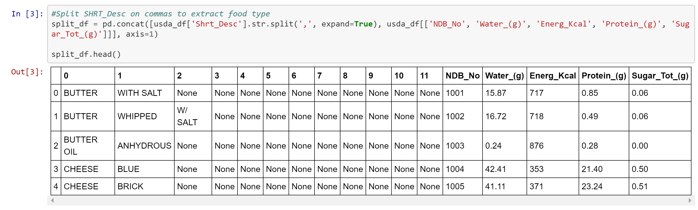
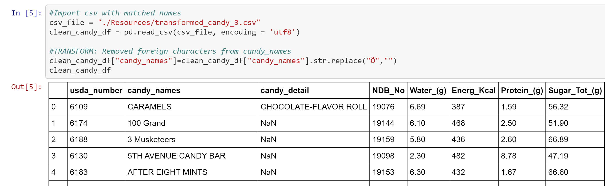
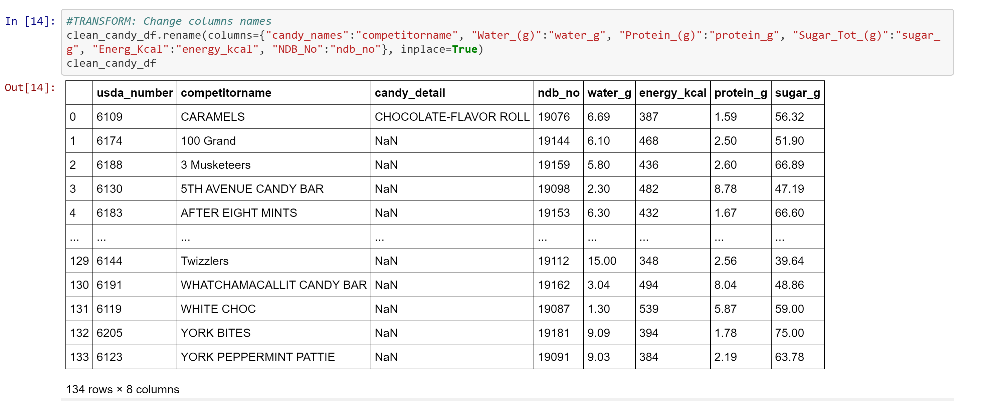

Extract | Transform | Load
Sweet or sour? Chocolate or caramel? Chocolate? White, milk, or dark chocolate? Snickers, KitKat, or Milky Way? No matter your favorite candy, you can probably walk down the aisles of your local grocery on a mid October day and buy a trashbag sized bag of it. Halloween is the most popular time for candy sales, but what makes the most popular candies so popular? For this project, we investigated if nutritional information could potentially be used as in indicator for consumer purchasing (i.e. grams of sugar, water content, or grams of protein) and candy popularity.
Extract
We selected two CSVs as our data sources

Transform
Cleaning, filtering, merging
The USDA provides data on all food types, so after importing the csv into a dataframe, we identified that we would need to split the ‘Shrt_Desc’ column to extract the relevant food category (‘Candies’) and candy name. We split the ‘Shrt_Desc’ column on commas, and performed a .loc to extract foods in the ‘Candies’ category, and then dropped columns with ‘None’ values. We ended up with 134 rows of candy, and exported this to a new csv file. 5. Part of our transformation took place in Excel, where we had to change the names that the USDA had given various candies to match the candy names in the FiveThirtyEight dataset (i.e ‘Butterfinger Candy Bar’ to ‘Butterfinger’). Since the dataset was relatively small, it was faster to do this by copy-pasting from the FiverThirtyEight CSV into the extracted USDA candy dataset in Excel rather than cleaning the names programmatically.
Once our candy names matched, we created dataframes for both csvs using pandas and removed foreign characters from the resulting candy names.
We changed the column names to increase ease of formatting to our relational database, and then merged our CSVs on our candy name columns using an inner join, thus dropping any columns with incomplete data.
We then dropped any irrelevant columns (like the USDA database number) and duplicates. We ended up with 34 rows.
Load
We loaded our final data table into a relational database in PostgreSQL called ‘candy’ (merged in pandas so no need to join in SQL). A relational database is easy to scale and maintain data integrity, so we thought for this small database with potentially many more entries, that this made the most sense.